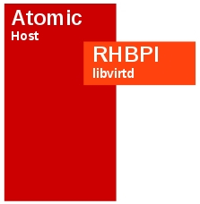
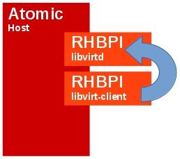

An Atomic host is a minimal system that is designed to run containers. On an Atomic host, you don’t install additional software via the traditional package management tools. The software running on the host is provided by composed upstream RPM content.
Because of this, everything running on an Atomic host should be running inside a container. In this article we are going to show you how to deploy both libvirtd and libvirtd-client onto a Atomic host and how you can deploy virtual machines with that configuration.
Scenario 1: libvirtd in a container
A libvirt installation on a single node, like a laptop, has become rather trivial theses days. Users can, for example, issue a reasonably simple yum command and install a KVM environment that only needs a few tweaks to become runnable. That simplification has masked the primary components of KVM like libvirtd, libvirt-client, virsh, and qemu. The basic Atomic deployment has none of these.
The first step to setting up a containerized KVM environment is to set up libvirtd in its own container without the libvirt-client. Our libvirtd container will consist of the the Red Hat Base Image as illustrated below.

Registering your Atomic system with subscription-manager
To use the Red Hat Base Images on any system, you must first register your system with subscription manager and subscribe to the proper pools. The following is an outline to do this and you are expected to customize for your system. For more information on Red Hat Subscription Manager, check here.
$ sudo subscription-manager register --username
$ sudo subscription-manager list --available | less
$ sudo subscription-manager subscribe --pool <pool_id>
Configuring a bridge
The Atomic host will ship with the bridge-utils package. We can use brctl to create the bridge and then configure the interface files so the environment is set up properly. Below is just one example of how to do this. You will need to change it for your environment.
Add the bridge.
$ sudo brctl addbr virbr0
Show the bridge and then configure the interfaces, notice how there is no physical interface assigned ot the virbr0 interface yet.
$ brctl show
bridge name bridge id STP enabled interfaces
docker0 8000.56847afe9799 no
virbr0 8000.000000000000 no
$ sudo cat ifcfg-enp2s0f0
DEVICE="enp2s0f0"
HWADDR="xx:xx:xx:xx:24:42"
BOOTPROTO="dhcp"
ONBOOT="yes"
BRIDGE="virbr0"
$ sudo cat ifcfg-virbr0
DEVICE=virbr0
TYPE=Bridge
BOOTPROTO=dhcp
ONBOOT=yes
Restart the network and ifup / ifdown the interfaces if needed.
$ sudo systemctl restart network
Show the newly created bridge interface and ensure that it has an IP address assigned now. The enp2s0f0 interface does not have an IP now.
$ ip show dev virbr0
38: virbr0: <BROADCAST,MULTICAST,UP,LOWER_UP> mtu 1500 qdisc noqueue state UP
link/ether 00:x:x:x:24:42 brd ff:ff:ff:ff:ff:ff
inet 10.x.x.139/21 brd 10.19.143.255 scope global dynamic virbr0
valid_lft 21835sec preferred_lft 21835sec
inet6 2620:52:0:1388:217:a4ff:fe77:2442/64 scope global dynamic
valid_lft 2591937sec preferred_lft 604737sec
inet6 fe80::217:a4ff:fe77:2442/64 scope link
valid_lft forever preferred_lft forever
Now show the bridge again and you should see the ethernet interface assigned to the bridge.
brctl show
bridge name bridge id STP enabled interfaces
docker0 8000.56847afe9799 no
virbr0 8000.0017a4772442 no enp2s0f0
Obtaining the libvirtd Dockerfile
Docker builds containers with a markup file, generally called ‘Dockerfile’. These files are usually stored in git repositories and are trivial to obtain. To grab the files related to this blog, clone the projectatomic/docker-image-examples git repository and then change into the docker-image-examples/rhel-libvirt/libvirtd directory.
$ git clone https://github.com/projectatomic/docker-image-examples
Cloning into 'docker-image-examples'...
remote: Counting objects: 449, done.
remote: Compressing objects: 100% (7/7), done.
remote: Total 449 (delta 0), reused 0 (delta 0)
Receiving objects: 100% (449/449), 1.17 MiB | 1.32 MiB/s, done.
Resolving deltas: 100% (130/130), done.
Checking connectivity... done.
$ cd docker-image-examples/rhel-libvirt/libvirtd/
Reviewing the libvirtd Dockerfile
Before building the libvirtd container, familiarize yourself with the Dockerfile in docker-image-examples/rhel-libvirt/libvirtd. You can find more information on Dockerfile format and function at https://docs.docker.com/reference/builder/.
The main points of consideration for running libvirtd in a container are:
- knowing the qemu URI and telling libvirtd to listen on a TCP socket
- getting the daemon to run on startup
- making sure that the /dev/kvm has correct permissions for the container
- setting a common volume mount for the KVM images (ISOs and virtual disk images)
By default libvirtd and its client use a unix socket to communicate. But now that the libvirtd process is running in a container, the socket cannot be shared with the host where you are running the libvirt-client unless you want to share it over a bind mounted volume. In this case, we chose to use TCP/IP for the URI, which means our default URI will change from qemu:///system to qemu+tcp://
- listen_tls = 0
- listen_tcp = 1
- tls_port = “16514”
- tcp_port = “16509”
- auth_tcp = “none”
The libvirtd service is being started by the the /usr/bin/init CMD that was provided by the Dockerfile during the image build process. We had to make a slight alteration to that systemd file to appropriately change permissions of the /dev/kvm device which is normally done by a udev rule. And finally, the combination of the mkdir -p /var/lib/libvirt/images and the volume mounts creates a shared volume between the host and container.
Depending on your setup, you may also need to configure a few items on your host. For example, if you want network access, then using brctl to define a new bridge device would be required.
Building the libvirtd container
Building the libvirtd container is rather trivial now. From the libvirtd directory, we simply issue a Docker build command, provide an image name for convenience, and provide a path to the Dockerfile.
$ sudo docker build -t libvirtd .
Sending build context to Docker daemon 52.74 kB
Sending build context to Docker daemon
Step 0 : FROM rhel7
Pulling repository rhel7
e1f5733f050b: Download complete
---> e1f5733f050b
Step 1 : MAINTAINER "Brent Baude" <bbaude@redhat.com>
---> Running in 787d56238d37
---> 2baa2c55f2ac
Removing intermediate container 787d56238d37
Step 2 : ENV container docker
---> Running in 75885e28f8a6
---> 33eb09f7b0ae
Removing intermediate container 75885e28f8a6
Step 3 : RUN yum -y update && yum clean all
---> Running in ded63f2b04ce
{content deleted for space}
Removing intermediate container f1795b2ee5b9
Step 11 : RUN sed -i "/Service/a ExecStartPost=\/bin\/chmod 666 /dev/kvm" /usr/lib/systemd/system/libvirtd.service
---> Running in f3ebcae1d8d2
---> a4ad53d4bf53
Removing intermediate container f3ebcae1d8d2
Step 12 : VOLUME [ "/sys/fs/cgroup" ]
---> Running in 5c7ab46c5a8d
---> 8e3f24fe2442
Removing intermediate container 5c7ab46c5a8d
Step 13 : CMD ["/usr/sbin/init"]
---> Running in a92838248486
---> 8de6992bbdf1
Removing intermediate container a92838248486
Successfully built 8de6992bbdf1
To verify the build and image name, we can issue use the command docker images:
$ sudo docker images
REPOSITORY TAG IMAGE ID CREATED VIRTUAL SIZE
libvirtd latest 8de6992bbdf1 3 minutes ago 696.4 MB
Running the libvirtd container
Now that the libvirtd image has been built, we are ready to start it. The docker run command we use to start the container is:
$ sudo docker run --rm --privileged --net=host -ti -e 'container=docker' \
-v /proc/modules:/proc/modules -v /var/lib/libvirt/:/var/lib/libvirt/ \
-v /sys/fs/cgroup:/sys/fs/cgroup:rw libvirtd
Because of the -i (interactive) switch, this console will be consumed with this running container. For the next scenario, be prepared to open another terminal. The resulting output should look like the following:
Welcome to Red Hat Enterprise Linux Server 7.0 (Maipo)!
Set hostname to <>.
Cannot add dependency job for unit display-manager.service, ignoring: Unit display-manager.service failed to load: No such file or directory.
[ OK ] Reached target Paths.
[ OK ] Listening on Journal Socket.
[ OK ] Listening on Delayed Shutdown Socket.
[ OK ] Reached target Swap.
[ OK ] Created slice Root Slice.
[ OK ] Created slice System Slice.
[ OK ] Reached target Slices.
[ OK ] Reached target Local File Systems.
Starting Create Volatile Files and Directories...
Starting Journal Service...
[ OK ] Started Journal Service.
[ OK ] Started Create Volatile Files and Directories.
[ INFO ] Update UTMP about System Reboot/Shutdown is not active.
We can verify if the libvirtd service is running by issuing a simple virsh command. Remember that the Atomic image does not contain the libvirt-client packages, so for this first test, we will run virsh from our workstation:
# virsh --connect qemu+tcp://<ip_of_atomic_host>/system list --all
Id Name State
----------------------------------------------------
Scenario 2: libvirtd, libvirt-client in containers
Building upon Scenario 1, our next step is to add a container to the Atomic host that can run common libvirt-client commands such as virt-install, virsh, and the like. Our intention here is to be able to have the libvirt-client “communicate” with libvirtd in the other container.

By nature, it will be a smaller container because it does not need all the daemons and qemu-related software. Let’s take a look at the (Dockerfile)[https://github.com/projectatomic/docker-image-examples/blob/master/rhel-libvirt/libvirt-client/Dockerfile] in the libvirtd/libvirt-client directory. Note we install very little extra software on top of RHBPI but we do add systemd, virt-install – which is handy for initiating new guests; libvirt-client, and of course any dependencies that are brought in by yum. The one key change that is noteworthy is we add the default URL for qemu to point at the docker bridge IP address. This ensures that by default all libvirt-client commands will point to the libvirtd running in the other container.
Building the libvirt-client container
To build the libvirt-client container, we simply issue the docker build command from the libvirt-client directory like so:
$ sudo cd ~/docker-image-examples/rhel-libvirt/libvirt-client/
$ sudo docker build -t libvirt-client .
Sending build context to Docker daemon 3.072 kB
Sending build context to Docker daemon
Step 0 : FROM rhel7
---> e1f5733f050b
Step 1 : MAINTAINER "Brent Baude" <bbaude@redhat.com>
---> Using cache
---> 2baa2c55f2ac
Step 2 : ENV container docker
---> Using cache
---> 33eb09f7b0ae
Step 3 : RUN yum -y update && yum clean all
---> Using cache
---> 6a8734c7d515
{content omitted for space}
Step 7 : CMD ["/usr/sbin/init"]
---> Running in 003487fb592b
---> f0f0d37eec9d
Removing intermediate container 003487fb592b
Step 8 : RUN echo 'uri_default = "qemu+tcp://172.17.42.1/system"' >> /etc/libvirt/libvirt.conf
---> Running in 390805a54caa
---> 1060020db519
Removing intermediate container 390805a54caa
Successfully built 1060020db519
We can confirm the build and image name with the docker images command:
$ sudo docker images
REPOSITORY TAG IMAGE ID CREATED VIRTUAL SIZE
libvirt-client latest 1060020db519 30 seconds ago 482.9 MB
libvirtd latest 8de6992bbdf1 16 minutes ago 696.4 MB
Running the libvirt-client container
Unlike the libvirtd container, the libvirt-client container will not run as a daemon but instead will run interactively. Lets ensure the basic libvirt connections are working with a simple virsh command.
$ sudo docker run -it --rm libvirt-client virsh list
Id Name State
----------------------------------------------------
Just like our previous test from a workstation, the libvirt daemon responded. Notice though, we did not have to pass the –connect argument like the previous test because the libvirt-client container has that defined already.
Booting the Fedora cloud image using the libvirt-client container
We have now proven that the libvirt communication now works between the containers and we are ready to start a KVM guest. Lets deploy the prepared Fedora cloud image via the same mechanism. First we need to fetch the image. We can do this with the libvirt-client container.
$ sudo mkdir /var/lib/libvirt/images
$ sudo docker run -it --rm -v /var/lib/libvirt:/var/lib/libvirt \
--net host libvirt-client curl -o /var/lib/libvirt/images/fedora.qcow2 \
http://fedora.osuosl.org/linux/releases/20/Images/x86_64/Fedora-x86_64-20-20131211.1-sda.qcow2
% Total % Received % Xferd Average Speed Time Time Time Current
Dload Upload Total Spent Left Speed
11 204M 11 23.8M 0 0 2512k 0 0:01:23 0:00:09 0:01:14 2145k
You might question why we are bind mounting volumes in with the libvirt-client container. The above example is a good reason why. Without it, the libvirt-client container would not have storage space it shares with the libvirtd container. Moreover, when used in this fashion, it will most likely retain the correct permissions when interacting with files.
To boot the image, we can use virt-install in the libvirt-client container.
$ sudo docker run -it --rm -v /var/lib/libvirt:/var/lib/libvirt \
libvirt-client virt-install --name fedora_test --ram 4096 --vcpus 2 \
--disk path=/var/lib/libvirt/images/fedora.qcow2,format=qcow2,bus=virtio,size=15 \
--network bridge=virbr0 --import
Starting install...
Creating domain... | 0 B 00:00:00
Connected to domain fedora_test
Escape character is ^]
[ 0.000000] Initializing cgroup subsys cpuset
[ 0.000000] Initializing cgroup subsys cpu
[ 0.000000] Initializing cgroup subsys cpuacct
[ 0.000000] Linux version 3.11.10-301.fc20.x86_64 (mockbuild@bkernel01.phx2.fedoraproject.org) (gcc version 4.8.2 20131017 (Red Hat 4.8.2-1) (GCC) ) #1 SMP Thu Dec 5 14:01:17 UTC 2013
[ 0.000000] Command line: ro root=UUID=d355e4e0-5805-45a4-a04c-cd4675044207 console=tty1 console=ttyS0,115200n8 initrd=/boot/initramfs-3.11.10-301.fc20.x86_64.img BOOT_IMAGE=/boot/vmlinuz-3.11.10-301.fc20.x86_64
[ 0.000000] e820: BIOS-provided physical RAM map:
{content omitted for space}
Fedora release 20 (Heisenbug)
Kernel 3.11.10-301.fc20.x86_64 on an x86_64 (ttyS0)
dhcp-119 login:
And within a few seconds, the image will have booted.
In the authors’ experience, the use of virt-builder would make these scenarios far more efficient. Using virt-builder we can quickly create a customized image of Fedora instead of inheriting the cloud image. Unfortunately as of this writing, virt-builder which is part of libguestfs is not available in Red Hat Enterprise Linux 7.
Reviewing some post installation items
Before we move onto the third scenario, this is a good time to review a few important things relative to this “split” libvirtd and libvirt-client setup. It will also reveal some good to know information about docker and containers themselves. Firstly, from the host, we can observe the KVM guest (cloud-init image) running in the system processes.
$ ps ax | grep qemu-kvm
10578 ? Sl 0:12 /usr/libexec/qemu-kvm -name fedora_test <output edited out by author>
We can also see which containers are currently running use the docker ps command:
$ sudo docker ps
CONTAINER ID IMAGE COMMAND CREATED STATUS PORTS NAMES
eed398122a78 libvirt-client:latest "virt-install --name 32 minutes ago Up 32 minutes hungry_brattain
1b1cdb5bfe7e libvirtd:latest "/usr/sbin/init" 37 minutes ago Up 37 minutes agitated_nobel
Notice how we see both the libvirtd and libvirt-client containing are active. And if you look at your console session for the cloud-init guest we ran earlier, it is just sitting at a console login. If you want to escape from that console session, you can issue a ctrl-] and you will exit the virsh console session. If we re-run the docker ps command, you will notice a change:
$ sudo docker ps
CONTAINER ID IMAGE COMMAND CREATED STATUS PORTS NAMES
1b1cdb5bfe7e libvirtd:latest "/usr/sbin/init" 38 minutes ago Up 38 minutes agitated_nobel
The libvirt-client container is no longer running. That is because you escaped the virsh console session which was being provided by the libvirt-client container. Therefore, with the virt-install command having completed and the console being exited, the container stopped itself.
You can reconnect to the console of the fedora_test guest using the libclient-client image as well with a command like:
$ sudo docker run -it --rm -v /var/lib/libvirt:/var/lib/libvirt \
libvirt-client virsh console fedora_test
Connected to domain fedora_test
Escape character is ^]
Fedora release 20 (Heisenbug)
Kernel 3.11.10-301.fc20.x86_64 on an x86_64 (ttyS0)
dhcp-119 login:
Scenario 3:
In this scenario, we will build upon scenario two by showing you how to prepare to install a KVM guest using a Fedora network install method. In addition, we will include the use of VNC for the graphical install which is commonly the default graphical device for KVM.
Starting the Fedora installation
From the atomic host, we can use the libvirt-client to begin the installation of Fedora. In this case, we will use virt-install with the -l argument which allows you to install Fedora from a remote host without downloading any media first. We do, however, need to manually create a directory for the -l downloaded images to temporarily reside in which by default is var/lib/libvirt/boot.
$ sudo mkdir /var/lib/libvirt/boot
$ sudo docker run -it --rm -v /var/lib/libvirt:/var/lib/libvirt \
--net=host libvirt-client virt-install --name fedora_vnc --ram 4096 \
--vcpus 2 --disk path=/var/lib/libvirt/images/fedora_test.qcow2,format=qcow2,bus=virtio,size=15 \
--network bridge=virbr0 -l http://fedora.osuosl.org/linux/releases/20/Fedora/x86_64/os/ \
--graphics vnc,port=5910,listen=0.0.0.0 --noautoconsole
Starting install...
Retrieving file .treeinfo... | 2.2 kB 00:00:00 !!!
Retrieving file vmlinuz... | 9.8 MB 00:00:03 !!!
{content omitted for space}
Allocating 'fedora_test.qcow2' | 15 GB 00:00:00
Creating domain... | 0 B 00:00:00
Domain installation still in progress. You can reconnect to
the console to complete the installation process.
Author Note: In some of our tests, we observed a python traceback when using virt-install with the -l parameter. However, the command did complete successfully.
It would be worthwhile to look at a few of the arguments in the install command we used:
- –net=host was added because the -l variable of virt-install requires a working network connection
- -l points to a valid Fedora repository
- –network is using a valid bridge as defined on the host
- –graphics defines the type of vnc and a specific port, the 0.0.0.0 instructs vnc to listen “everywhere” – a password can also be defined here.
- –noautoconsole instructs virt-install to not automatically set up a console as this will fail due to the container separation.
In the example command we used to start virt-install, we did specifically define port of 5910. That port will default to :10 for connecting your vnc client, but we can also verify using the virsh command and the libvirt-client container like so:
$ sudo docker run -it --rm -v /var/lib/libvirt:/var/lib/libvirt \
libvirt-client virsh vncdisplay fedora_vnc
:10
On your laptop or another client, you can then connect to the VNC session with a command like:
# vncviewer<atomic_host>:10
Once connected with vnc, you can complete the Fedora install which is outside the scope of this blog post.